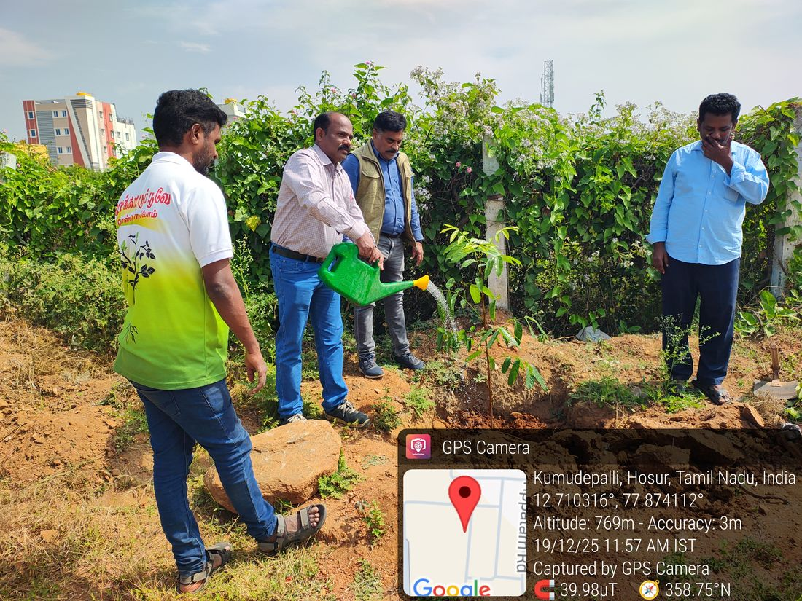
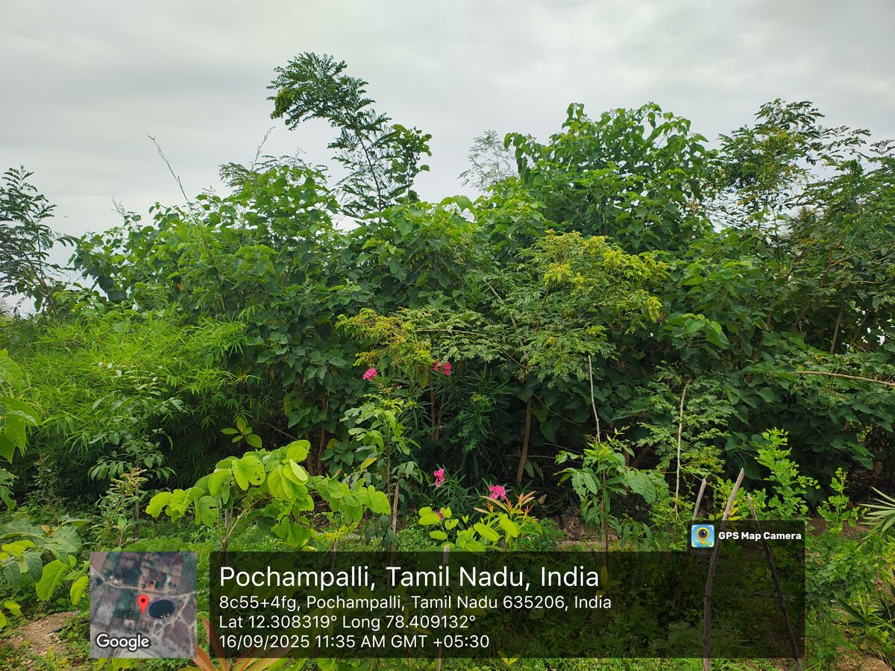

Community Service
Where is my bus?
See your bus moving live on the map and roughly when it reaches your stop. Free, for everyone.
Home / Transport
Are you a bus or lorry owner? Track your own fleet live, free of charge. Owner login / register →

Why does a tree trust track buses?
Fewer people waiting on the roadside, fewer wasted trips, fewer private vehicles. A bus you can trust is a greener city.